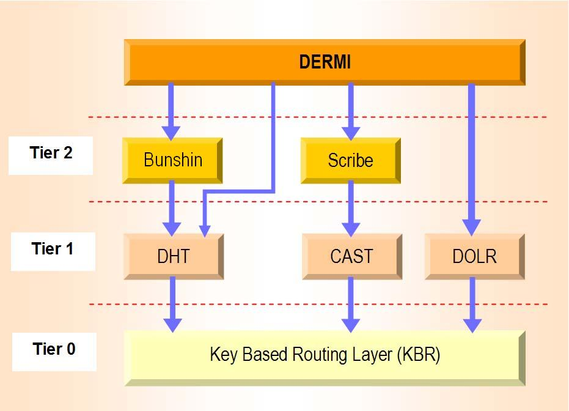

|
|
News
-
16/05/2006 - Dermi v1.6 is available.
-
15/11/2005 - Dermi v1.5 is available.
-
22/06/2005 - Dermi v1.4 is available.
-
07/02/2005 - Dermi v1.2 final release
unleashed!
-
11/08/2004 - Dermi
v1.2Alpha 2 released. This is a bugfix release.
-
11/08/2004 - Added News section.
Dermi (Decentralized Event Remote
Method
Invocation) is a peer-to-peer (P2P), decentralized event-based
object middleware framework built on top of a structured
Distributed Hash Table (FreePastry)
based overlay network. Based on an event-notification service
that is the principal building block (Scribe),
Dermi makes three innovative contributions: P2P call
abstractions, a distributed interception mechanism, and a
decentralized object-location service.
-
Peer-to-peer call abstractions include one-to-one
calls, and one-to-many calls, which can be either synchronous or
asynchronous in nature.
One-to-one calls
do not use the event service, which fits more effectively in one-to-many
calls. This kind of calls involve only two entities: an object
client (stub) that sends a message directly to an object server (skeleton).
One-to-many calls, use the application-level
multicast layer to send notifications. There exist several kinds of
one-to-many calls.
-
Multicall is a remote invocation from
one client to many servers (or viceversa). As client/server
numbers increase, this approach scales better than having point-to-point
connections to any interested client.
-
Anycall is a new form of remote
procedure call that benefits from network locality. We take
advantage of
Scribe's
efficient anycast primitive to create a call to the
objects that belong to the same multicast group (object replicas
that can provide us with a service, for example). The anycall
client is insensitive to which group object provides data; it
only wants its request to be served.
-
Manycall is a variation of the anycall
abstraction. It sends a manycast message to several group
members, continuing to route until it finds enough members to
satisfy a global condition.
-
Distributed interception lets us apply
connection-oriented programming concepts in a distributed setting.
With this service we can reconnect and locate type-compatible
interceptors at runtime in a distributed application. We extended
Scribe's classes to natively support this feature.
-
Decentralized object location. We use the
P2P overlay network substrate DHT facilities to build our object
location service. It stores object-location information that can be
used to find objects via human-readable names.
Dermi is the decentralized version of
ERMI, and it benefits
from the advantages of the structured P2P network it is built on
top of to provide many additional services, like the already
commented anycall and manycall abstractions, efficient direct
P2P calls, and a native distributed interception facility.
Dermi is built on top of a decentralized key-based
routing (KBR) P2P overlay network. It benefits from the underlying
services provided by the P2P layer, including group multicast and
anycast (CAST), the DHT abstraction, and a decentralized object location
and routing layer (DOLR). Moreover, Dermi uses the
Bunshin object
replication and caching system. Our system models method calls as events
and subscriptions using the API provided by the CAST abstraction (which
models a wide-area event service). A diagram can be seen just below.

Decentralized Event Remote Method Invocation (Dermi).
Distribution: Source and binary code,
written and compiled in Java v1.5.0 RC. License: Dermi is
available under a
LGPL-like license.
-
May 10, 2006. Release 1.6. [Java
1.5 required]
-
Release Notes: Migration to Bunshin
2.2.4 and FreePastry 1.4.4.
More bug fixes.
-
Download:
dermi_1_6.zip [source + binaries]
-
November 15, 2005. Release 1.5. [Java
1.5 required]
-
Release Notes: Migration to Bunshin
2.1.2 and FreePastry 1.4.2.
-
Download:
dermi_1_5.zip [source + binaries]
-
June 22, 2005. Release 1.4. [Java
1.5 required]
-
February 7, 2005. Release 1.2. [Java
1.5 required]
-
July 30, 2004. Release 1.1. [Java 1.5
required]
-
Release Notes
This version
requires Java 1.5 runtime for execution and compilation.
Dermic tool has been eliminated, and stubs and skeletons
do not need to be generated in compilation time. Instead, the
Dynamic Proxy technique borrowed from Java 1.4 onwards
is applied so as remote object calls are intercepted in
runtime by a dynamic proxy and sent towards the network to the
destination object. Calls are then intercepted by a generic
skeleton.
Java 1.5 annotation mechanism is used to mark each
remote
procedure call with the desired invocation type tag
(Multicall, Directcall, Anycall, ...). Moreover, an adaptation
layer has been introduced, which provides Dermi's isolation
from the underlying DHT technology used. This means that the
transition from one DHT to another becomes an easy and
transparent process for applications built on top of Dermi.
-
Download:
dermi_1_1.zip [source + binaries]
-
May 09, 2004. Release 1.0. [Java 1.4
compatible]
-
Release Notes: This release
includes major refactoring of Dermi code, major bug fixing,
migration to FreePastry 1.3.2, thus including the
utilization of Scribe via the
Common
API. Extensive tests and retransmission of lost
events are included.
-
Download:
dermi_1_0.zip [source + binaries]
-
July 30, 2003. Release 0.3 Beta. [Java 1.4
compatible]
-
Release Notes: Initial version of Dermi,
based on FreePastry 1.3. Includes all the features described
in the
ICDCS 2004 paper: P2P call abstractions (including
anycall and manycall), distributed interception, and a
sketch of the decentralized object location service.
-
Download:
dermi_0_3.zip [source + binaries]
CoopWork
CoopWork is an
Eclipse cooperative development plug-in, which has been
developed using Dermi. It benefits from Dermi's services, thus
providing a set of collaborative tools, including presence services,
a chat system, a list of currently modified resources, a log of
published versions in the group, and a notification system.
Additionally it provides code sharing tools.
Distribution: Source and binary code,
written and compiled in Java v1.4.1.
Carles Pairot Gavaldà, PhD student in the Department of
Computer Science and Mathematics at Universitat Rovira i Virgili in
Tarragona, Catalonia, Spain. Contact
<carles.pairot@urv.net>
Pedro
García López, full-time professor in the Department of
Computer Science and Mathematics at Universitat Rovira i Virgili in
Tarragona, Catalonia, Spain. Contact
<pedro.garcia@urv.net>
Rubén Mondéjar
Andreu, M. Sc. Computer
Science Student in the Department of Computer Science and
Mathematics at Universitat Rovira i Virgili in Tarragona, Catalonia,
Spain.
-
Pairot, C., García,
P., Rallo, R., Blat, J., Gómez Skarmeta, A.F. The Planet Project:
Collaborative Educational Content Repositories on Structured Peer-to-Peer
Grids. Accepted for publication on Proceedings of the 5th ACM/IEEE
International Symposium on Cluster Computing and the Grid (CCGrid
2005). Second International Workshop on Collaborative and Learning
Applications of Grid Technology and Grid Education (CLAG + Grid.edu
2005). Cardiff, United Kingdom, May 2005.
-
Pairot, C., García,
P., Gómez Skarmeta, A.F., Mondéjar, R.
Towards New Load-balancing Schemes for Structured Peer-to-Peer
Grids.
Future Generation Computer Systems - The International Journal of
Grid Computing: Theory, Methods and Applications. Vol. 21,
January 2005, pp. 125-133. ISSN: 0167-739X.
-
Pairot, C., García, P., Mondéjar, R., Gómez
Skarmeta, A.F.
Towards
a Peer-to-Peer Object Middleware for Wide-Area
Collaborative Application Development.
Revista Iberoamericana de
Inteligencia Artificial. Vol. 8, No. 24, Winter 2004, pp. 55-65.
ISSN: 1137-3601.
-
Pairot, C., García, P., Gómez Skarmeta,
A.F., and Mondéjar, R.,
Achieving
Load Balancing in
Structured Peer-to-Peer
Grids. Lecture Notes
in Computer Science (LNCS)
Volume 3038. 4th
International Conference on
Computational Science (ICCS
2004). 1st International
Workshop on Active and
Programmable Grid
Architectures and Components
(APGAC 2004). Kraków, Poland.
June 2004, pp. 98-105.
Pairot C., García P., Gómez Skarmeta, A.F.
Dermi: A
Distributed Hash Table-based Middleware Framework.
IEEE Internet Computing. Vol. 8, No. 3, May/June 2004, pp. 74
- 84.
-
Pairot, C., García, P., Gómez Skarmeta, A.F.
DERMI:
A
Decentralized Peer-to-Peer Event-Based Object Middleware.
Proceedings of the 24th IEEE International Conference on Distributed
Computing Systems (ICDCS 2004). Tokyo, Japan. March 2004, pp. 236 -
243.
-
Pairot, C., García P., Gómez Skarmeta, A.F.,
Rallo, R., Mondéjar, R.
DERMI:
Middleware para aplicaciones de trabajo en grupo
descentralizadas. Jornadas Técnicas RedIRIS 2003, Palma de
Mallorca, Spain, November 2003.
|
 Decentralized
Event
Remote
Method
Invocation
Decentralized
Event
Remote
Method
Invocation

 PLANET Project
Page
PLANET Project
Page